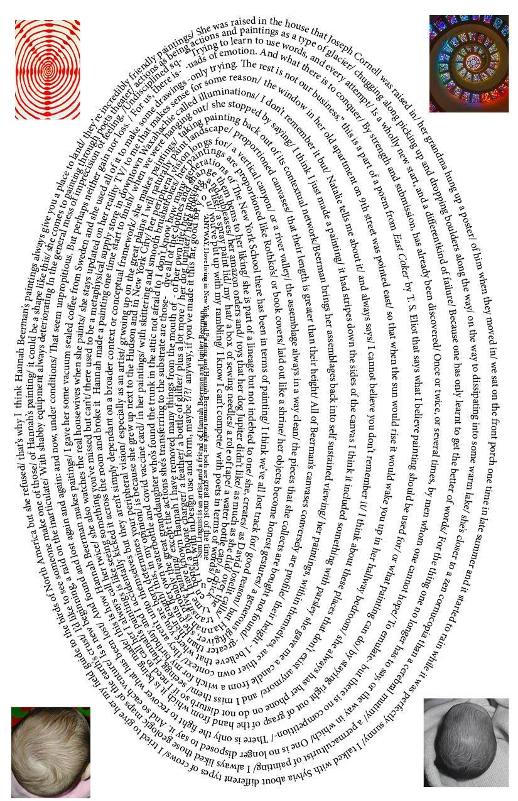
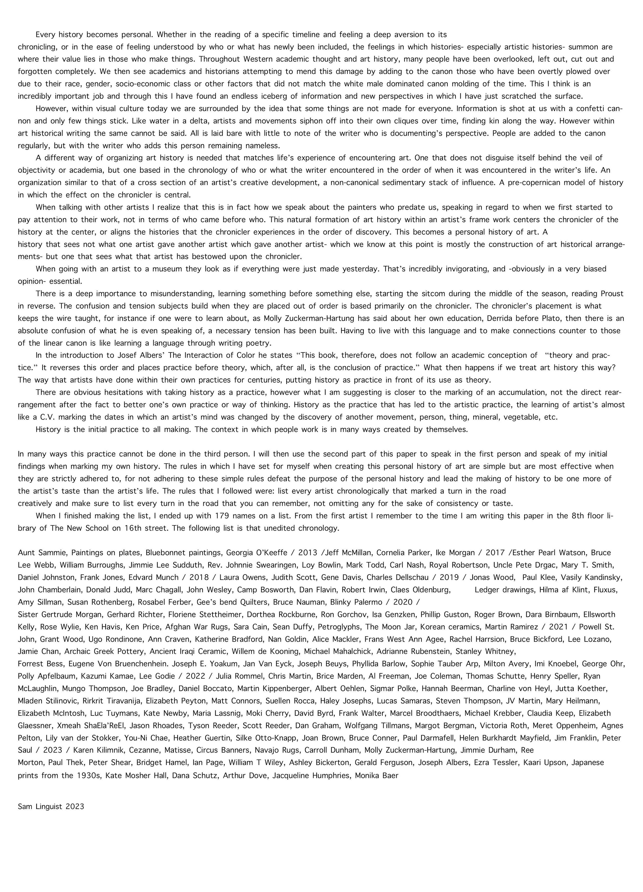
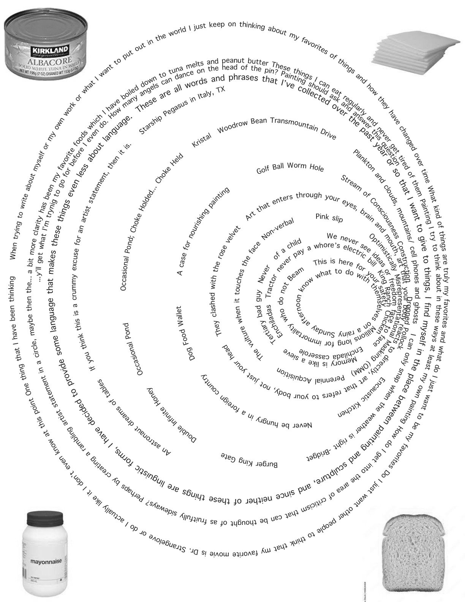

Lucia Arbery Simek's writing for ITALY, TEXAS at Institute 193
Natalie Power's writing for SOAP OPERA at Laurel Gitlen
2023



Art that Invades My Dreams (September 19, 2023)
I am interested in art that invades my dreams:
Things that, whether you like it or not, invade your subconscious, things that sway what you make, if only just a little bit, by immersing themselves in your thoughts, from either the direct encounter with the work, or from simply the image. What is remembered of the work subconsciously is not the work itself nor the image, but “...the main course, where the viewing experience is simply the hors d'oeuvres.” It is in this state that art is the most potent. It is not the work itself or the image of the work that has power, but the reverberations of the initial encounter.
“…it is impossible to suppress the memory of an image.”
“A brief encounter is the most beautiful encounter that exists.” - Michel Majerus on the work of Sigmar Polke, 1997
For that is where art thrives! Brief encounters that we think back upon while we make our top ramen back at our apartments.
When thinking about what I’m interested in in regards to painting, objects, or installation, I find that I am drawn most towards earnest making. The kind of making that is in itself serious by its own effort or conviction- that is not to say self serious art which usually comes into being by deep academic insight into what art wants out of you, not what you want to give art, but art that simply in its own pursuit of coming into being is all very serious- trying so hard to get something exactly how you wish it to be embeds work with some type of, for lack of the better word, soul. Things that do not rely on any type of skill as the main entry, but some other type of scrappy human questioning. I have found that the artists I find myself completely confounded by and deeply interested in, have rarely, if ever, been called talented. Talent in relation to skill is something I have very little interest in.
In my own work I do not have the ego strength to do things simply because I want to do them, I have to weasel my way into painting or installation or object making. I have to find some type of form that makes my own artistic pursuits seem worthwhile without relying on skill or craft. Once I have found this wedge within the surface, I can feel free within my own practice to honestly create whatever I wanted to create in the first place. This is not a fault, simply a way in which I found I have to work. I think I am drawn to work that takes this approach of moving “…fruitfully sideways…” (Schjeldahl, 2017), a method that has its own reasons that only make sense to the artist. Methods that cannot be made to need to exist in the natural way of wanting art to exist.
In reference to artistic legacies, I owe very much to the history of early post minimalists such as Ree Morton and Richard Tuttle, as well as to conceptual painters such as Mary Heilmann, Jutta Koether and Karen Kilimnik. However, growing up in a small town in Texas I had little access to art other than through a place called Webb Gallery, where I lived half a mile away. The Webbs’ gallery specialized in what we call Outsider Art as well as contemporary artists from across the country, all with a certain thread of warmth and honesty. They were the ones who told me that leaving the state to go to college is something I could actually do, as well as the ones who told me about Parsons.
I am deeply interested in these contemporary practices of painting and art making, but the basis of my deep love of art is in art environments in which the Webbs discovered and took care of as well as artists that worked outside of the canon of contemporary art who the Webbs represented. The art they made or environments they installed were completely interlinked with each other and how they lived. Separation of painting, objects, installation and life never occurred to either the Webbs or any of their artists working within or without the canon.
I learned when I moved to New York in 2019 that people are always trying to figure everything out. Trying to find a linguistic reason why anyone does anything, or why anyone makes any kind of choice. What drew me to art, in the first place, was its non-linguistic ambiguity. Not knowing why you like something or dislike something or are confused by something. Trying to work through what you find interesting.Trying to figure something out, the reasons behind something, is a coastal thinking, or a north eastern coastal thinking. The south west is a place where things can be incomprehensible, the landscape (ever receding), the geologic calendar (seemingly infinite), the clouds (incessantly drifting). Myths are not questioned and life does not have to have reason or have to be fair. The south west is cradled in celestial care while simultaneously being rocked into direct inexhaustible loneliness. When looking at the full scope of the night sky in Texas, it is hard to separate these feelings of cosmic belonging and utter isolation. One’s direct knowledge of their own scale when they see the entire expanse of landscape and the ever milky blackness of the complete solar system.
How then does one within art provide these two great goals: to provide a signal to message to people that they are indeed not alone, and to create things that language cannot simply express. Creating a type of milky blackness, a void that simultaneously comforts and questions, that isolates and consoles. To create a community of other people interested in this non-linguistic ambiguity. For art to enter through your eyes, brain and body- and dare I say soul.
The way I work is like shooting a confetti cannon into a room every day for a month or so, then sweeping it all into organized piles, trying to figure out what goes where and what looks good here and what looks cool there.
Sometimes I do not want to be the one who sweeps things up, maybe that's where writing comes in, my own or maybe the writing of others.
“What if we thought of the goddess Iris instead of Hermes, Iridescence instead of Hermeneutics.” - Amy Sillman
On Jutta Koether, 2023
“Create a language, use the language, then make fun of people in your language when they start using your language.” - Molly Zuckerman-Hartung
Natalie and I are technically the godparents of Ziggy Abraham Rubenstein Head. This started when Natalie started to work for Adrianne Rubenstein who needed help in her studio as well as with her new born child. Natalie and I both went in for the interview expecting both of us to be employed less than part time, me as more of a studio manager and art handler, and Natalie as a caretaker for Ziggy. During the interview it became abundantly clear that Natalie was more qualified to do both duties, therefore she got both jobs. This led to me getting a job with the artist Al Freeman sewing naugahyde into large soft sculptures, making sure not to impale her beige French bulldog when he lunged at me full force while I cut material on the ground.
That aside, Natalie takes care of Ziggy during the day while Adrianne is at the studio and Jake, Adrianne’s partner and Ziggy’s father, is teaching. Ziggy looks as if he is our offspring, he has brown eyes and dark hair like Natalie and is oddly tall for his age and has curls like me. We tote him around downtown in either his baby bjorn or his shearling lined pram, waving to friends across busy intersections, miming that he is not our real child.
One of our favorite things to do with our decoy baby is to go to galleries and act like a young rich artist family. To be young and to have a child in New York means that you are wealthy enough to pay for preschool, therefore you must have a good income, and if you’re an artist with a good income, it is hard to divorce that from the idea that you are a good artist. We love ringing the bell so that they have to let us in, pram and all. From time to time the director of the gallery will come out and talk to us, directing us to the backroom and asking if we would like sparkling or still water in bottle form. Through this decoy baby maneuver, Natalie and I have seen some of the best art hidden from the plebians of the average gallery visitor, beautiful Thomas Schutte maquettes, deep cut Cady Noland cutouts and other random things from artists we have never heard of. A momentary ascension, or miming of a momentary ascension of class that is granted to few outside of the art making profession.
One day Natalie was in Ziggy-Baby-Bjorn mode which means we can go see shows that do not have elevator access. We walked up the silver staircase into Reena Spaulings that day to see a show by the German painter Jutta Koether with the knowledge that my roommate had been deeply obsessed with the diptychs, but little else. I had finished the new Kippenber ger biography that was written by Susanne Kippenberger, but still had not touched the post-war-German-painting Kool Aid to which I was soon to guzzle down.
The show, entitled eVEryTHinG WilL ChaNGe consisted of 19 new works, all oil on canvas. Ranging from diptychs and triptychs on eight by ten inch canvases to larger works that measured seventy eight and three quarters by fifty nine inches. When you are with a baby in a gallery you realize that your time is limited, so your eyes start to see things in a way that thinks about how little time you have to look. I initially saw how cheap the quality of the small canvases were, pre gessoed and chalky with thin abbreviated strokes in Koether’s signature red tones. Like closeups of organs, or alien instruments, these smaller canvases offer themselves as cutouts of larger images that cannot be conceived as a whole. Without any type of sensicle system other than it looks as if Koether had made them. They do not drift towards pattern and decoration, or sculptural painting, but something completely bizarro and other. With stroke qualities between a calligrapher and a patron of somewhere such as Paint and Pour, Koether proves that there is indeed no such rules in painting, all is up for grabs, even if it is grabbed and used in a way that is not that of value within painting as a whole. Koether paints like the last person in the world, licking the plate clean and not leaving any scrap of technique for future generations to appropriate. She simultaneously starts from scratch and finishes the sentence. The painter Eric Palgon later told me that Koether had told him while he was studying under her in Frankfurt that “...she only owned one plate, one fork, one spoon and one knife. That’s all you need.”
By the time we had made one lap of the small gallery, without any acknowledgement from the staff, Ziggy had woken up and emitted a squawk, marking the end of our viewing time. We left swiftly to go across the street to Seward park where we both got iced coffees and Ziggy had his bottle of formula.
The show closed a few days later without either of us being able to see the paintings again, and soon our memory of that day was boiled down to the fact that we felt incredibly uncool and unwanted in that space.
Weeks later I came upon a talk that Koether gave at Dia about Agnes Martin. I was shocked. How did Dia- the most uppity gate keepers of contemporary art- give this oddball the opportunity to talk? I soon found my jaw on the floor seeing that Koether had started her lecture with a dubstep remix of Rihanna’s Where Have You Been. At this moment I realized her true brilliance. I had been searching in the dark trying to name the flavor in which these bizarre paintings fit, to realize that they fit nowhere. Like salt on watermelon, red wine with orange Fanta, the visual information that Koether strong-arms into the world are keys to nothing- questions to nothing as well- but with their absence we would be lacking something that we would not know how to replace properly.
The painter Annie Louise Goldman once when talking about a tube of lead white oil paint described it as ropy. What this means I do not fully understand, a trick of the trade that is saved for those who commit their lives to oil paint, however I can assuredly say that Koether’s paintings are perhaps the antithesis of whatever this ‘ropy’ means. The tensions that she creates within brushstrokes snap and dissipate into themselves, leaving the surface incredibly light, like standing up too quickly out of a hot bath.
Compositionally the works become even odder puzzles to swallow. Little pieces of kale that stay in your teeth. There is obviously a consistency of color and brushes and textures, ranging from -it seems- only a few brushes and five or six colors used per canvas. The symbols have a similar kind of limitation, however the abstractness becomes even more apparent. Jewels, hearts, vines, flowers, airplanes and of course grapes are the technical forms that are used formally to create forms and expanses that radiate. Each canvas starting from square one within these restraints to create tensions that mash into one another in a way similar to bumper cars, needed for the game to exist.
Koether has given me many things I cannot name, not because they are secret, but because they are non-linguistic. Feelings that cannot be translated directly to English. Maybe there is a word in Icelandic or Portuguese that could describe precisely what is happening, but until I learn both of those languages I will have to take what I feel directly and that may just be the joy of coming into contact with an artist who has done in some way what I wish I could do, what I hope to do.